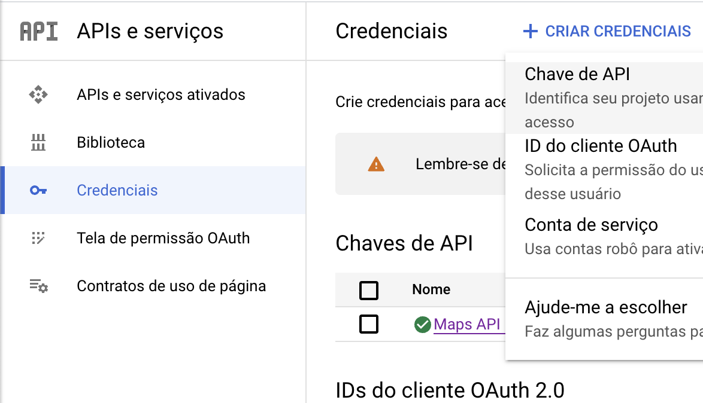
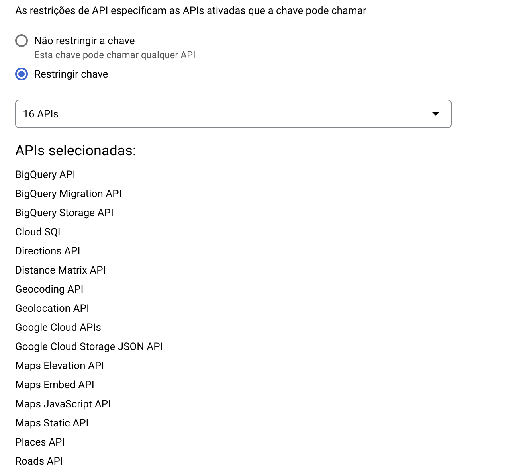
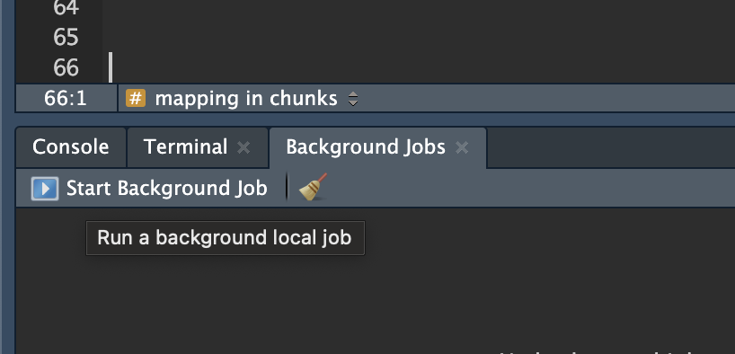
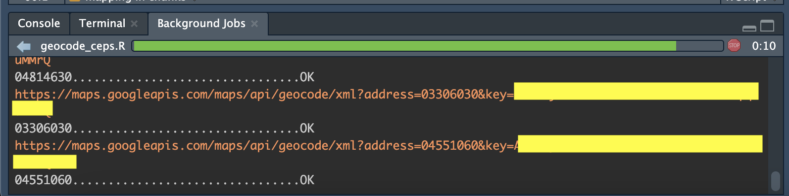

```{r}
#| label: setup
#| message: false
library(tidyverse)
library(mapsapi)
library(here)
```Introdução
Passo a passo para geolocalizar CEPs. Aqui vamos usar o pacote {mapsapi} do Google. Outra possibilidade é o {cepR} (CepAberto), mas tem um limite muito baixo de requisições por dia e, na minha experiência, é menos preciso. Tem ainda o {osmdata} (Open Street Map), mas o uso é um pouco mais complicado.
O exemplo parte da RAIS, mas qualquer outra base pode ser usada. Cada API tem sua vantagem e desvantagem, mas a rotina geral é a mesma: preparar a base > submeter a busca (query) > salvar os dados > carregar.
Setup
Carregar os pacotes necessários
Preparar a base de CEPs
Partindo da RAIS, vamos pegar os CEPs que queremos buscar e deixá-los no formato necessário. Como a base é muito grande, isso pode levar um tempo.
Supondo que a RAIS está em um arquivo único: leia-o e salve em um objeto. Aqui usamos a função read_fst(), substitua por read_csv(), readRDS() ou a função apropriada para o seu tipo de arquivo.
Para evitar a confusão de diretórios envolvendo setwd()/getwd() e a inversão de barras, recomendo criar um R Project. Ele já considera que todos os seus diretórios são relativos à pasta principal do projeto, assim, todos os diretórios podem ser relativos a ele. Ex.: read_csv("data/rais.csv") em vez de read_csv("C:/Documents/User/Projects/trabalho/data/rais.csv").
É bom ainda usar a função here() do pacote homônimo para garantir que o diretório será lido corretamente, principalmente quando se usar RMarkdown (.Rmd)/Quarto (.qmd), mas também nos scripts .R, como no exemplo abaixo.
```{r}
#| label: load-rais
df_estab <- fst::read_fst(here("data/db/df_rais_estab.fst"))
```Agora, vamos filtrar essa base para excluir os CEPs duplicados e remover as outras informações, não vamos precisar delas agoras. Com isso, vamos gerar uma base de CEPs. O procedimento é o seguinte:
- Primeiro, selecionamos só a variável que contém o cep (no meu caso,
cep). - Isso não é obrigatório, mas ajuda: modificamos (usando
mutate()) a variávelcepde duas formas,
- primeiro, removendo o hífen, se houver
- segundo, padronizando o CEP como uma variável do tipo
charactercom 8 caracteres. No caso dos CEPs de SP Capital, um cuidado adicional: como eles começam com um zero à esquerda, secepestivesse antes no formato de número, inserimo-lo novamente com a funçãostr_pad().
- Passamos a função
distinct()para remover duplicados. - Salvamos na pasta adequada e com nome legível para usar depois.
- Salve essa base na sua pasta de dados para usar novamente se precisar, principalmente se a API travar
- Use um formato como o
.RDSou o.fst, que ocupam menos espaço e tem leitura mais rápida. Aqui, vamos usar o.RDSpara já salvar direto no formato de vetor, que vamos precisar lá na frente.
```{r}
#| label: filter-ceps
df_ceps <- df_estab %>%
select(cep) %>%
mutate(cep = str_remove(cep, "-")) %>%
mutate(cep = str_pad(as.character(cep), width = 8, side = "left", pad = 0)) %>%
distinct()
# transformar em vetor
df_ceps <- df_ceps$cep %>% as.vector()
# salvar
df_ceps %>% saveRDS(here("data/db/df_ceps.RDS"))
```Configurar a API
Agora, selecionamos a API desejada e fazemos a query. O {mapsapi} é minha escolha favorita para esse tipo de tarefa porque contém as informações mais precisas e é fácil de usar depois que você configura a chave.
Primeiro, crie um projeto no Google Cloud. Se você não sabe fazer isso, veja meu passo a passo no post Acessando a Base dos Dados no R.
Depois disso, vá ao console do seu projeto, clique em APIs e serviços, depois em credenciais e crie uma chave API, como na imagem abaixo.

Você vai ver um alerta do google informando que sua API não está restrita: isso significa que qualquer um que tiver acesso a ela pode usá-la livremente (e cobrar no seu cartão de crédito). Eu recomendo que, no mínimo, você restrinja a API aos serviços que vai usar. Clique no nome dela para editá-la e defina as restrições, eu selecionei 16 serviços:

Assim que tiver a sua API, copie a sua chave. Atenção: NUNCA compartilhe a sua chave com ninguém. Não faça upload de nenhum script que contenha sua chave! Assim que usá-la, recomendo apagar do script. Ou, melhor ainda, salve no .Renviron.
Geocodificar os CEPs
Vou apresentar aqui três formas de geocodificar os CEPs. Elas são quase idênticas, a diferença é que na primeira buscamos todos os CEPs direto, na segunda usamos uma função para “tentar” o resultado e na terceira fazemos isso aos poucos. A vantagem é reduzir o retrabalho: na primeira alternativa, se der erro, temos que voltar do começo e buscar tudo de novo. Na segunda, se der problema, temos que refazer apenas os problemáticos. A terceira é uma camada a mais de proteção: se por exemplo a sua internet cair no meio do processo, você já tem os resultados salvos para parte dos dados.
Alternativa 1: tudo de uma vez
Usamos a função mp_geocode para geocodificação do {mapsapi}. Ela tem dois argumentos principais: (i) key, a chave API (podemos colocá-la direto na função ou salvar por fora, como abaixo) e (ii) addresses, que são os endereços que queremos geolocalizar. A função tem um argumento postcode, mas não vamos usá-lo: ele serve para limitar os endereços postais dos endereços, como nossos addresses já são CEPs, não faz sentido usar. O outro argumento que usamos, timeout, é o tempo limite (em segundos) que definimos para a API tentar buscar o CEP. Se passar esse tempo e não funcionar, ela desiste e passa para o próximo.
Nota: neste e nos chunks abaixo, estou usando
message: falsepara ocultar minha chave API.
```{r}
#| label: geocode-v1
#| message: false
# chave API
mapsapi_key <- "sua chave API"
## ou, usando .Renviron:
mapsapi_key <- Sys.getenv("mapsapi_key")
# query
## obs.: aqui selecionei só os 2 primeiros para exemplo
query_ceps <- mp_geocode(
addresses = df_ceps[1:2],
key = mapsapi_key,
timeout = 11
)
```05724005................................OK
04570001................................OKDepois disso, usamos mp_get_points() para obter o centroide do CEP. A função faz isso a partir de todos os endereços cadastrados no Google com esse CEP —ou seja, não reflete exatamente toda a área do CEP— mas é uma boa aproximação. Em seguida, salvamos em um objeto na pasta adequada e podemos (de preferência, em outro script) carregar para casar com a base da RAIS.
Embora o formato .fst tenha a melhor compressão de todas, ele não funciona com objetos espaciais. Por isso, salvamos no formato .RDS, que também é muito bom.
```{r}
#| label: geocode-ceps
# pegar o centroide
shp_ceps <- mp_get_points(query_ceps)
# salvar
shp_ceps %>% saveRDS(here("data/shp/shp_ceps.RDS"))
```Alternativa 2: safely
Aqui, vamos usar a função safely(): como explicado nesse excelente post do curso-r, essa função serve para tentar rodar um código e, quando der erro, ela salva o erro em uma lista em vez de parar tudo. Passo a passo:
- Criar uma função
wrapper(i.e., “que embrulha”) paramp_geocode()emp_get_points(). Essa função deve ter só um argumento: a base de dados. A chave e o timeout devem ser definidos dentro dela. - Passar a base de CEPs na função que criamos,
safely()
- Isso envolve usar a função
map()para mapear os dados na função. - Em seguida, transpomos os dados com
transpose()para obter uma lista com duas sublistas: os resultados e os erros. Cada sublista tem ainda uma lista para cada resultado. É lista demais mas respire fundo, vai dar tudo certo.
- Selecionar só a lista de resultados e juntar tudo em um dataframe só com
bind_rows() - Salvar em um objeto na pasta adequada. Esse objeto terá duas classes:
data.frameesf, ou Simple Feature, que é a classe dos objetos espaciais.
```{r}
#| label: geocode-v2
#| message: false
# chave API
mapsapi_key <- "sua chave API"
## ou, usando .Renviron:
mapsapi_key <- Sys.getenv("mapsapi_key")
# função envelope
geoceps <- function(data) {
mp_geocode(addresses = data, key = mapsapi_key, timeout = 11) %>%
mp_get_points()
}
# novamente: selecionando só 5 para exemplificar e adicionei um erro de propósito
query_ceps <- df_ceps[1:5] %>% map(safely(geoceps)) %>% transpose()
# puxar só os resultados
shp_ceps <- query_ceps$result %>% bind_rows()
# salvar
shp_ceps %>% saveRDS(here("data/shp/shp_ceps.RDS"))
```05724005................................OK
04570001................................OK
11721100................................OK
03311000................................OK
05615190................................OKVisualizando os resultados:
```{r}
#| label: view-ceps
# conferir a classe
class(shp_ceps)
# usando kable para visualização limpa no arquivo final
shp_ceps %>%
knitr::kable()
```[1] "sf" "data.frame"| id | status | address | address_google | location_type | pnt |
|---|---|---|---|---|---|
| 1 | OK | 05724005 | Av. Giovanni Gronchi, 6633-2147483647 - Vila Andrade, São Paulo - SP, 05724-005, Brazil | APPROXIMATE | POINT (-46.73669 -23.63962) |
| 1 | OK | 04570001 | Av. Nova Independência, 552-2147483647 - Brooklin, São Paulo - SP, 04570-001, Brazil | APPROXIMATE | POINT (-46.6888 -23.6008) |
| 1 | OK | 11721100 | Vila Antartica, Praia Grande - SP, 11721-100, Brazil | APPROXIMATE | POINT (-46.45468 -24.01176) |
| 1 | OK | 03311000 | R. Apucarana, 1-1000 - Tatuapé, São Paulo - SP, 03311-000, Brazil | APPROXIMATE | POINT (-46.56427 -23.54278) |
| 1 | OK | 05615190 | Rua dos Três Irmãos - Vila Progredior, São Paulo - SP, 05615-190, Brazil | APPROXIMATE | POINT (-46.7165 -23.58819) |
Alternativa 3: por partes, safely
Na alternativa 2, já evitamos um bocado de retrabalho impedindo que a função pare se encontrar um erro. Agora, vamos facilitar ainda mais a nossa vida: para evitar que um apagão, queda de internet etc apague todo o seu trabalho, vamos dividir tudo em etapas e ir salvando aos poucos. O procedimento é parecido, mas vamos usar e abusar da função map():
- Partir o data frame em chunks (pedaços) menores. Eu sugiro ir de 5 mil em 5 mil; aqui no exemplo, vamos de 5 em 5 para os 17 primeiros dados. Para isso:
- A função
split()vai partir os dados - Dentro de split,
seq_along(data)é uma sequência ao longo dos dados. - Dividimo-la pelo tamanho máximo do chunk e depois arredondamos para cima com
ceiling() - Isso vai criar uma lista com \(n\) sublistas, em que \(n\) é o número de chunks.
- Criar uma função wrapper parecida com a do passo anterior, mas atentando para o fato de que agora temos que mapear a lista nas funções.
- Nota: dentro de map, usamos a sintaxe das funções anônimas,
\(coiso) trem(coiso). No nosso caso, o\(x)é cada chunk de ceps da lista.
- Agora usamos a
imap()uma variação demap()que permite dar nome aos bois.
- Ela pede dois argumentos, que eu chamei de
xey; no caso,yé o identificador. Vamos usá-lo para salvar os chunks no padrãoshp_ceps_1.RDS,shp_ceps_2.RDS, …,shp_ceps_n.RDS. - Em vez do cifrão, puxamos
resultusando a funçãopluck(). Ela permite fazer tudo de uma vez, sem quebrar o fluxo.
```{r}
#| label: geocode-v3
#| message: false
# definindo os chunks
chunk_max <- 5
df_ceps <- df_ceps[1:17] %>%
split(ceiling(seq_along(df_ceps[1:17])/chunk_max))
# chave API
mapsapi_key <- Sys.getenv("mapsapi_key")
# função envelope
geoceps <- function(data) {
data %>%
map(
\(x)
mp_geocode(addresses = x,key = mapsapi_key, timeout = 11) %>%
mp_get_points()
)
}
query_ceps <- df_ceps %>%
imap(
\(x, y)
map(x, safely(geoceps)) %>%
transpose() %>%
pluck("result") %>%
bind_rows() %>%
saveRDS(here(paste0("data/shp/shp_ceps_", y, ".RDS")))
)
```Warning in min(bb[, 1L], na.rm = TRUE): no non-missing arguments to min;
returning InfWarning in min(bb[, 2L], na.rm = TRUE): no non-missing arguments to min;
returning InfWarning in max(bb[, 3L], na.rm = TRUE): no non-missing arguments to max;
returning -InfWarning in max(bb[, 4L], na.rm = TRUE): no non-missing arguments to max;
returning -Inf05724005................................OK
04570001................................OK
11721100................................OK
03311000................................OK
05615190................................OK
02034010................................OK
01125000................................OK
04814630................................OK
03306030................................OK
04551060................................OK
04061003................................OK
05316900................................ZERO_RESULTS
05374050................................OK
04365000................................OK
02832160................................OK
03053000................................OK
01407200................................OKFinalmente, depois que você rodar a query por partes, podemos carregar os arquivos no R e montar de novo em um dataset só com nossos ceps. Para isso:
- vamos usar
list.files()para listar todos os arquivos na pasta que seguem o padrão e mapear essa lista de padrões emreadRDS()e, em sequência,bindar asrows. Detalhe importante:patterné umaregex, ou regular expression. Nesse exemplos, estamos buscando o padrão que começa comshp_ceps_, seguido de um ou mais dígitos (\\d_) e do final .RDS (\\.RDS$). - Agora é só
mapear os arquivos.
```{r}
#| label: load-queries
paths <- list.files(
path = here("data/shp"),
pattern = "shp_ceps_\\d+\\.RDS$",
full.names = T
)
shp_ceps <- paths %>%
map(readRDS) %>%
bind_rows()
# visualizando
knitr::kable(shp_ceps)
```| id | status | address | address_google | location_type | pnt |
|---|---|---|---|---|---|
| 1 | OK | 05724005 | Av. Giovanni Gronchi, 6633-2147483647 - Vila Andrade, São Paulo - SP, 05724-005, Brazil | APPROXIMATE | POINT (-46.73669 -23.63962) |
| 1 | OK | 04570001 | Av. Nova Independência, 552-2147483647 - Brooklin, São Paulo - SP, 04570-001, Brazil | APPROXIMATE | POINT (-46.6888 -23.6008) |
| 1 | OK | 11721100 | Vila Antartica, Praia Grande - SP, 11721-100, Brazil | APPROXIMATE | POINT (-46.45468 -24.01176) |
| 1 | OK | 03311000 | R. Apucarana, 1-1000 - Tatuapé, São Paulo - SP, 03311-000, Brazil | APPROXIMATE | POINT (-46.56427 -23.54278) |
| 1 | OK | 05615190 | Rua dos Três Irmãos - Vila Progredior, São Paulo - SP, 05615-190, Brazil | APPROXIMATE | POINT (-46.7165 -23.58819) |
| 1 | OK | 02034010 | R. Alfredo Guedes - Santana, São Paulo - SP, 02034-010, Brazil | APPROXIMATE | POINT (-46.62484 -23.50629) |
| 1 | OK | 01125000 | R. da Graça, 2-2147483646 - Bom Retiro, São Paulo - SP, 01125-000, Brazil | APPROXIMATE | POINT (-46.64014 -23.52655) |
| 1 | OK | 04814630 | Rua Caiuby Alves de Castro - Jardim Guanhembu, São Paulo - SP, 04814-630, Brazil | APPROXIMATE | POINT (-46.68125 -23.7305) |
| 1 | OK | 03306030 | R. Fernão Tavares - Cidade Mãe do Céu, São Paulo - SP, 03306-030, Brazil | APPROXIMATE | POINT (-46.57571 -23.54378) |
| 1 | OK | 04551060 | R. Funchal - Vila Olímpia, São Paulo - SP, 04551-060, Brazil | APPROXIMATE | POINT (-46.68952 -23.59411) |
| 1 | OK | 04061003 | Av. Itacira, 2311-2147483647 - Planalto Paulista, São Paulo - SP, 04061-003, Brazil | APPROXIMATE | POINT (-46.64444 -23.62447) |
| 1 | ZERO_RESULTS | 05316900 | NA | NA | POINT EMPTY |
| 1 | OK | 05374050 | R. Gertrudes Cunha - Jardim Ester Yolanda, São Paulo - SP, 05374-050, Brazil | APPROXIMATE | POINT (-46.75819 -23.57779) |
| 1 | OK | 04365000 | Jardim Santo Antoninho, São Paulo - State of São Paulo, 04365-000, Brazil | APPROXIMATE | POINT (-46.66846 -23.65589) |
| 1 | OK | 02832160 | R. Col. Fernando Costa - Parque Sao Luis, São Paulo - SP, 02832-160, Brazil | APPROXIMATE | POINT (-46.69385 -23.48179) |
| 1 | OK | 03053000 | R. Bresser, 1051-1800 - Brás, São Paulo - SP, 03053-000, Brazil | APPROXIMATE | POINT (-46.60735 -23.54164) |
| 1 | OK | 01407200 | Av. Nove de Julho, 4701-2147483647 - Jardim Paulista, São Paulo - SP, 01407-200, Brazil | APPROXIMATE | POINT (-46.67088 -23.57679) |
Bônus: background jobs
Quando você estiver geolocalizando vários CEPs, isso vai demorar bastante —talvez uma tarde inteira, talvez mais. Por isso, é útil executar como um background job: isso libera o seu R para você fazer outras coisas enquanto ele roda a API em outra seção. Só não se esqueça de verificar de vez em quando o background job para ver se tá rodando, ao menos logo que você executar. Felizmente, usando safely() a chance de um erro travar tudo diminui muito. O que eu gosto de fazer: executar como background job, dormir, acordar e admirar a base que baixou à noite.
Para fazer um background job, temos que salvar o código dentro de um script R. Ou seja: não funciona com markdown (.Rmd/.qmd). Quando tiver seu script pronto, é só ir em Background Jobs, provavelmente na parte de baixo do seu RStudio, perto do console.

Depois que você iniciar o background job, é só ir acompanhando ali:

No final, ele te avisa se deu certo. E é isso!
Citação
BibTeX
@online{bazolli2023,
author = {Bazolli, Arthur},
title = {Geolocalizando CEPs},
date = {2023-09-26},
url = {https://baarthur.github.io/posts/2023-09-26-geoceps/},
langid = {pt-BR}
}
Por favor, cite este trabalho como:
Bazolli, Arthur. 2023. “Geolocalizando CEPs.” September 26,
2023. https://baarthur.github.io/posts/2023-09-26-geoceps/.